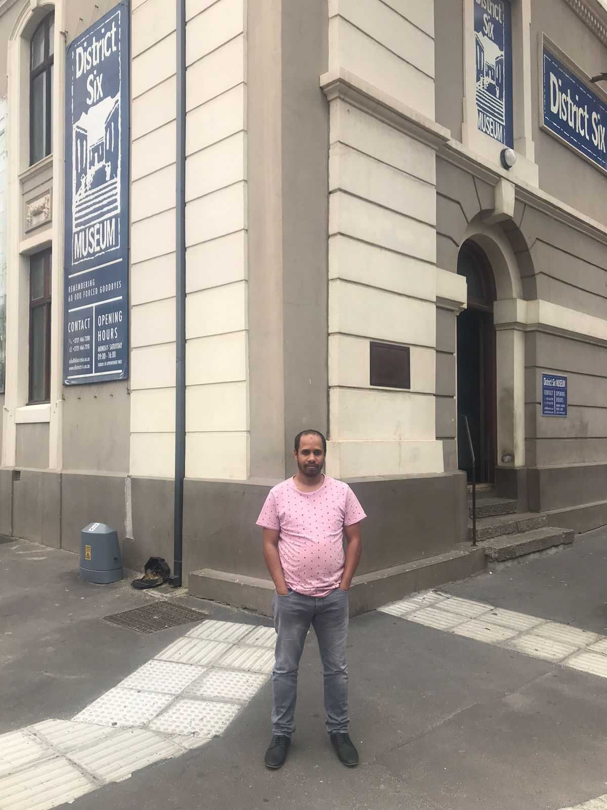
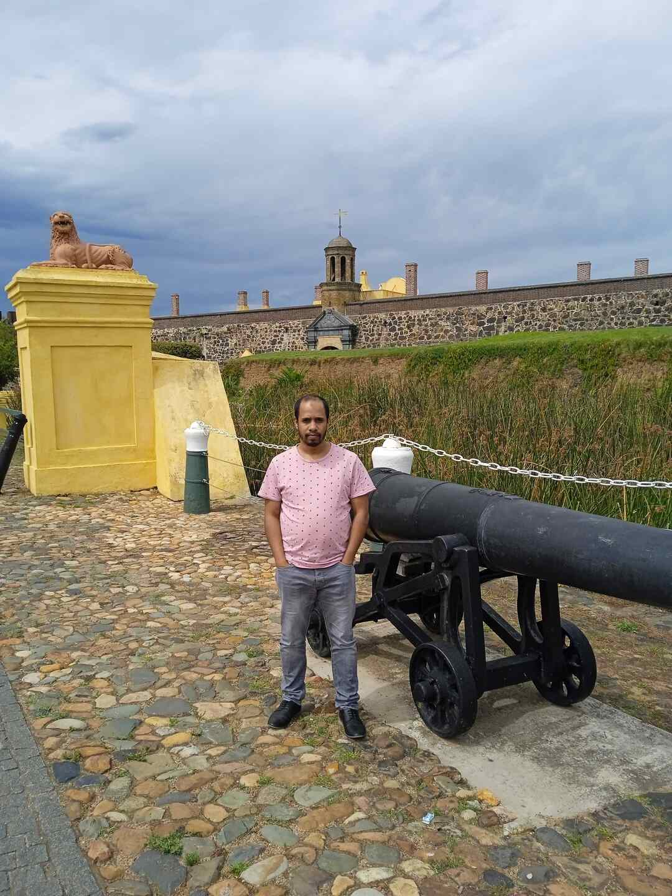
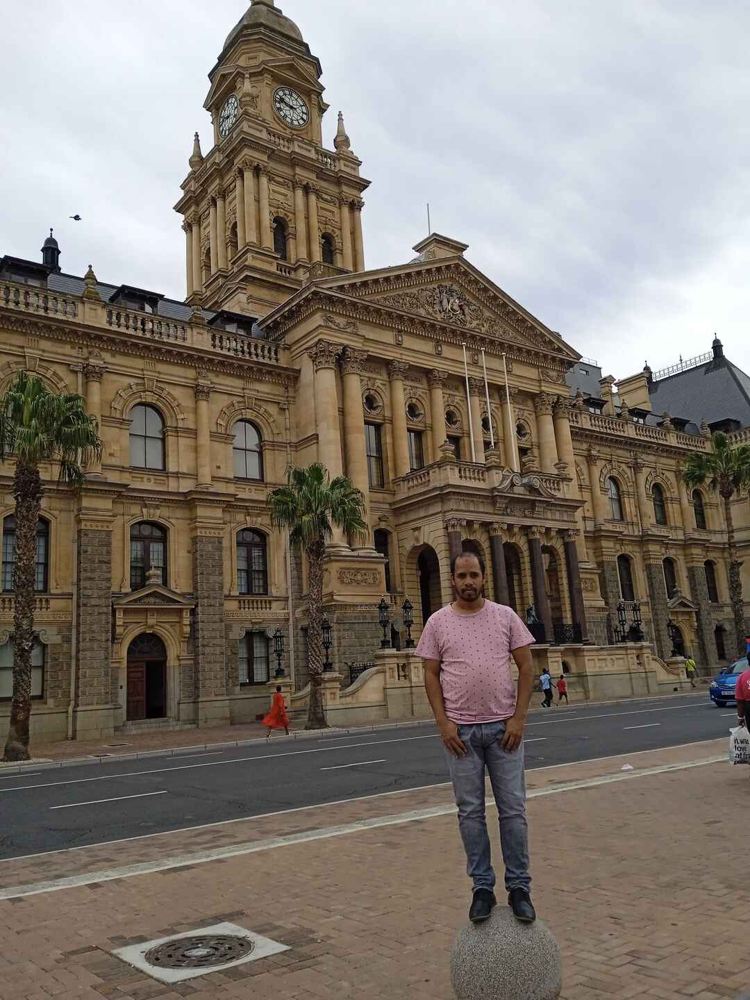

Hidaayat Williams

Switzerland
I would like to visit Switzerland because it has an interesting mix of people, languages and cultures. I also think it is a modern country with beautiful scenery and sites to see.
Foreign Language
I would like to learn Arabic because I think the language, people and culture are interesting. And also because I am muslim and it is the language of the Quran.
| English |
Arabic |
| Hi |
Ahlan |
| How are you? |
Kayf Haluk |
| I am fine, thanks |
Ana Bikhayr Shukran |
Historical Places
District Six Museum
- Offers guided tours
- Has a wonderful little coffee shop
- Has a bookshop which has souvenirs from District Six

Castle Of Good Hope
- The first stone was laid on 2 January 1666 and it was completed by April 1679
- The Castle was built by soldiers, volunteers, slaves and Khoi undergoing punishment.
- In 1936, the Castle of Good Hope was declared a national monument

City Hall
- St George's Cathedral is the oldest cathedral in Southern Africa
- It was built by Sir Herbert Baker out of sandstone from Table Mountain
- It was at St George's Cathedral where a memorial service for the late Madiba was held
